【賽事】傾聽跑者的聲音 TNF100顧問委員會正式成立
看完 2019年 TNF100 賽事回顧，再回想過程裡的酸、甜、苦、辣，當時的那股熱血是否又瞬間一湧而上了呢？那雙蓄勢待發的雙腳，及沉睡已久的越野魂似乎又在蠢蠢欲動。揮別 2019 TNF100，代表著 2020 的賽事即將來臨，你準備好接受挑戰了嗎？
2020 TNF100 正緊鑼密鼓地籌備當中，秉持品牌「探索永不止息」的精神及理念，賽事組委會對比賽品質的要求也不曾停歇，面對全新一年的 TNF100 賽事，組委會也正努力構思，如何為賽事帶來新的改變。
這是許多跑者開啟「人生第一場越野跑」的賽事，對於越野新手來說， TNF100 是踏入越野賽跑的重要一役，因此參賽過程的感受，對跑者而言有著舉足輕重的影響。TNF100 肩負這樣的重任，對此組委會比任何人都要重視，期盼能帶給選手更好的賽事體驗。
然而賽事的規劃沒有想像中容易，有時需要考量執行的可行性，同時更要兼顧跑者的感受，一來一往中，往往容易顧此失彼，造成賽事與選手間失去平衡，但或許這些難題可以從跑者之中找到答案。
在這樣的概念之下，今年起 TNF100 決定成立「TNF100 顧問委員會」，廣邀各領域的越野跑者代表擔任賽事顧問，聚集各方人馬，用多方面的角度傾聽跑者的聲音，選手的需求就由選手來解決，透過「TNF100 顧問委員會」搭起賽會與選手間的橋樑。
即便同在越野圈子裡，選手的同溫層仍不見得相同。越野顧問團的成員來自各個領域，從越野新手、資深跑者到跑團、社群的意見領袖等，吸取各路人馬的需求，多樣化的顧問成員組合，才有可能達到賽事與選手間的平衡。
TNF100 肩負引領選手踏入「人生第一場越野跑」的任務，也致力於越野跑運動的發展，作為國內越野跑的領導品牌，每一項改變都要小心謹慎。「TNF100顧問委員會」的成立，讓賽事與選手相輔相成，攜手打造更好的越野環境，TNF100 將與選手一同，為臺灣越野跑運動的發展奔馳向前。
2020 TNF100 在籌備過程中，將由「TNF100顧問委員會」提供的意見，組委會彙整各方建議做規劃上的參考，屆時 TNF100 將會以全新的樣貌呈現給各為越野跑友。看到這裡，對於 2020年的賽事是不是又更加期待了呢！喚起你的熱血越野魂，我們 2020 年在 TNF100 賽場上見囉！
- 賽事日期：2020/05/24(日)
- 活動地點：金瓜石勸濟堂大停車場
- 更多資訊：TNF100 官網
| 資深選手代表 | |
| 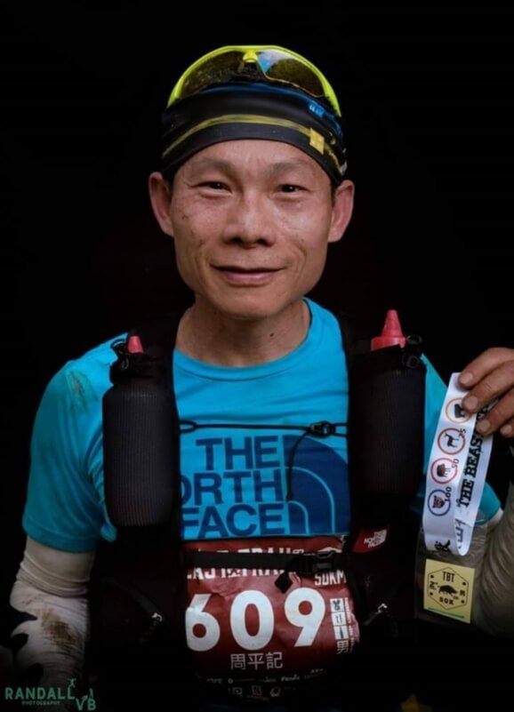 |
周平記 經歷：2018 TNF100 五十公里組冠軍 |
| 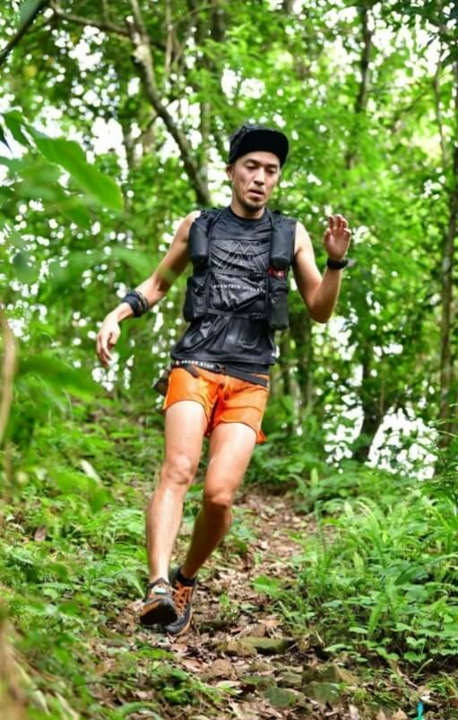 |
深井 亨 經歷：2018動感亞洲越野賽- 台灣站17K冠軍 |
| 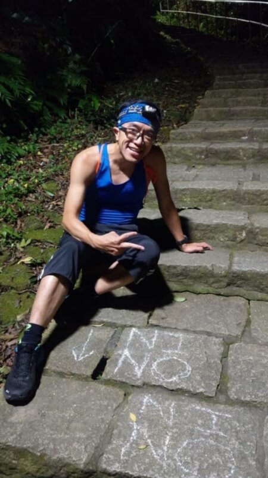 |
陳在琮 經歷：美國西部 100 台灣本土完賽第一人 |
| 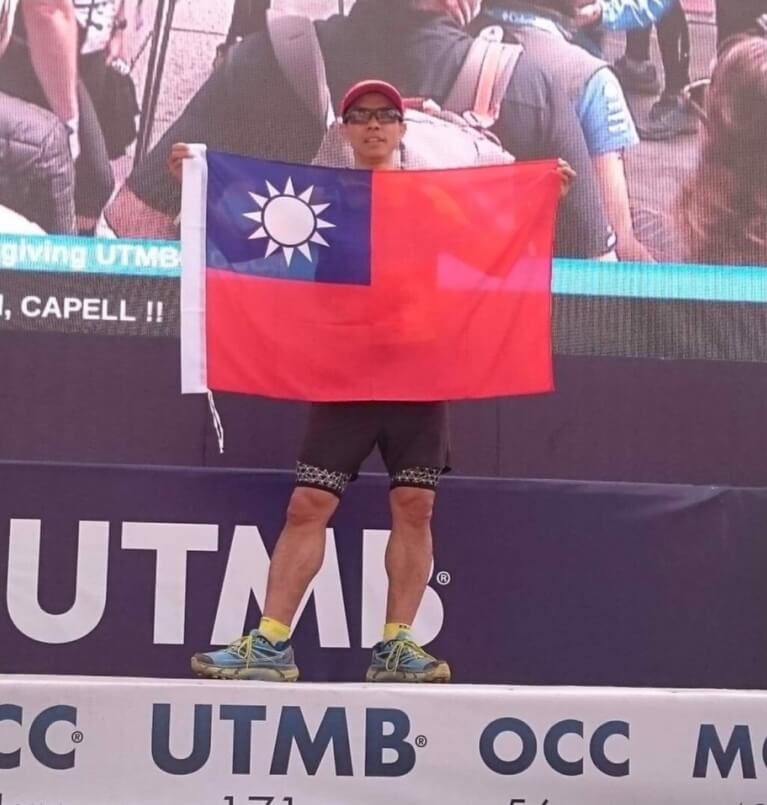 |
鄭國賓 經歷：2019 東北角 100mile 冠軍 |
| 女性選手代表 | |
| 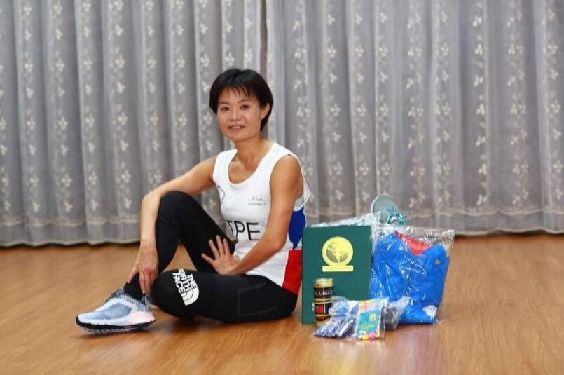 |
周玲君
經歷：24H 國家紀錄保持人
|
| 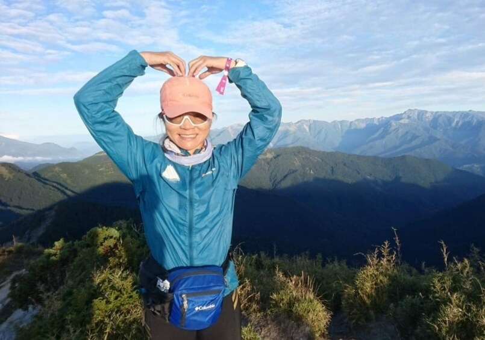 |
盧明珠 經歷：2016 谷關越野女子組 冠軍 |
| 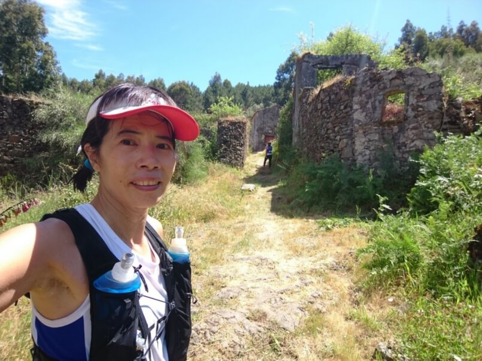 |
羅曉惠
經歷：2019 棲蘭100 女子組 冠軍
|
| 越野跑團領袖 | |
| 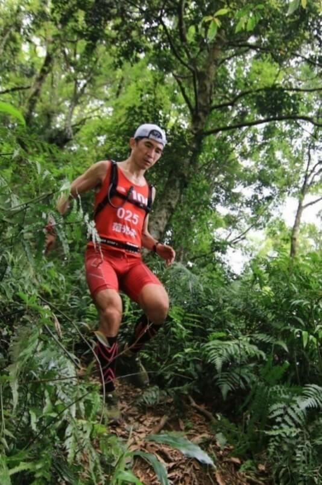 |
龍虎鳳越野－范光夫（泛泛） 經歷：龍虎鳳越野 創辦人 |
|
恰恰越野－陳炯宇（陳恰吉） 經歷：恰恰越野 創辦人 |
|
| 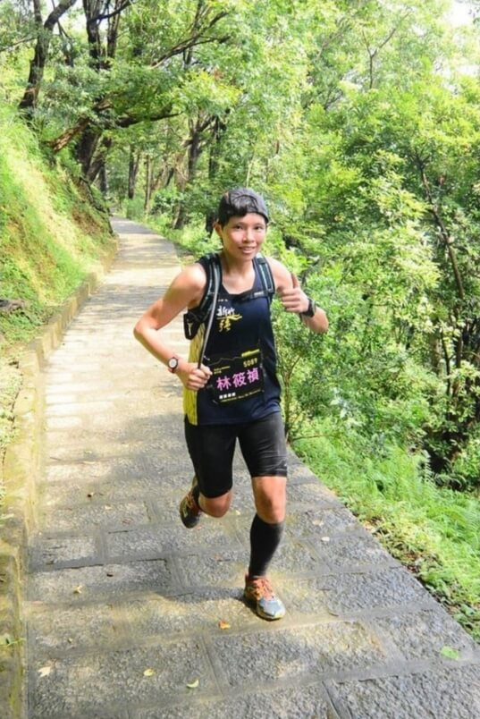 |
新竹強－林筱禎 經歷：新竹強 社團代表 |
| 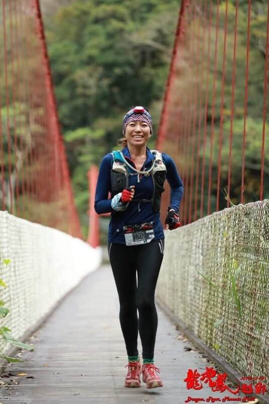 |
野孩子野跑協會－曾瓊慧 經歷：野孩子野跑協會 社團代表 |
| 意見論壇領袖 | |
| 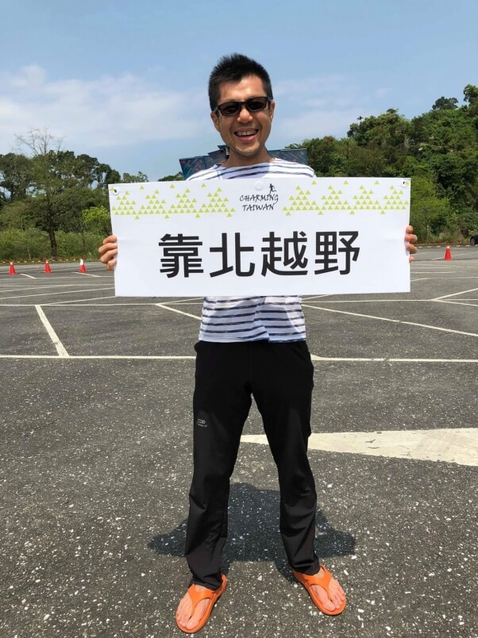 |
靠北越野－林俊豪（林飄丿） |
| 入門選手代表 | |
| 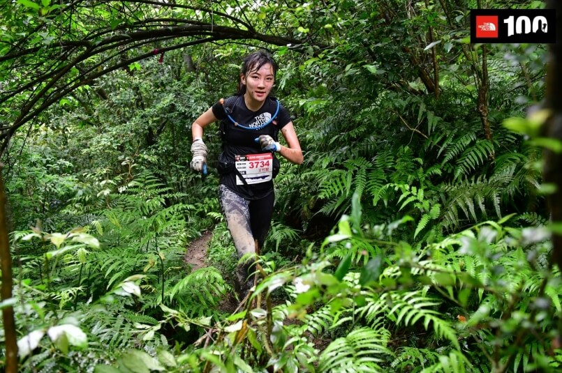 |
王竹賢 經歷：2018 TNF100 10K組 女子組第三名 |
| 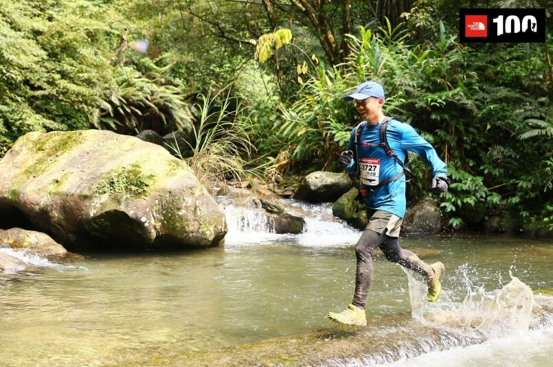 |
林淦細 經歷：運動筆記配速列車長 |